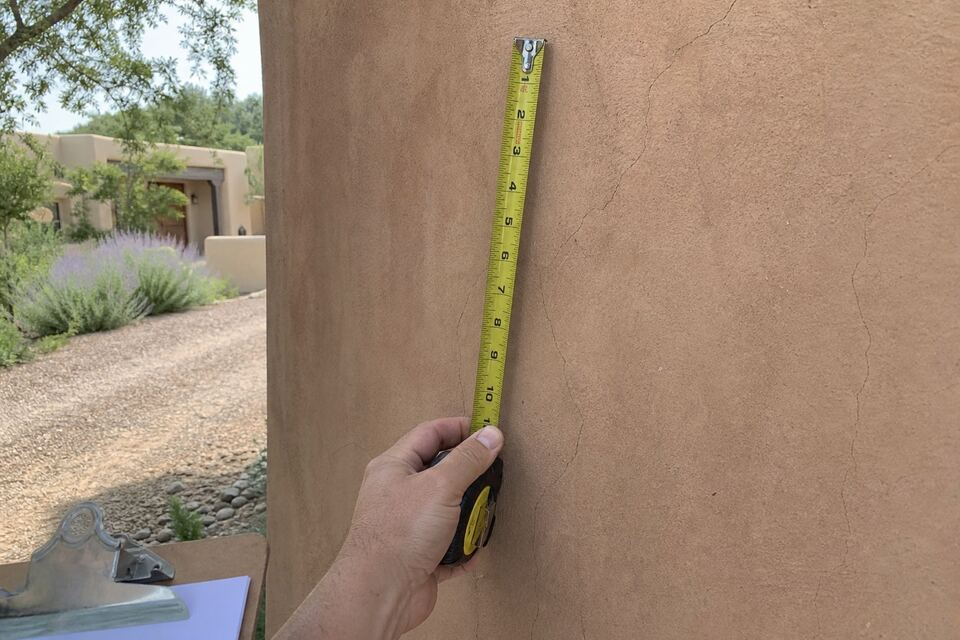

What Stucco Work Costs in Santa Fe
Stucco pricing is mostly visible arithmetic once you know the factors — scope, condition, access, system, color. This page lays them out so the bids you collect describe the same job, and so the suspiciously low one explains itself before it wins.

The factors, in order of impact
Scope. A crack repair, a wall, a color coat, a full re-stucco, and a new installation are different orders of magnitude — square footage drives material and labor, with per-foot cost easing as jobs grow.
What is under the finish. The wall’s real condition — sound brown coat versus crumbling substrate, dry wall versus moisture history — is the biggest variable a phone call cannot price. This is why the look-at-it visit exists; numbers promised sight-unseen get corrected on invoices.
Height and access. Single-story walls a ladder reaches price differently from two-story gables and parapet work needing staging. Tight lot lines and landscaping that must be protected add honest time.
System and material. Cement color coat, acrylic finish, full three-coat, lime plaster on adobe — each carries its own material and labor reality. Lime work on historic walls is craft-priced and worth it.
Repairs folded in. Re-stucco and color-coat jobs include fixing what is wrong first; parapet rebuilds and flashing corrections appear as their own lines so you can see them.
Season and cure windows. Stucco cures on weather’s schedule; jobs squeezed against hard freeze or monsoon weeks carry scheduling reality.
How quoting works here
Form starts it, the visit reads the walls (sounding for hollow spots, checking parapets, identifying the material), and the written scope that follows is itemized — repairs, prep, coats, color — so comparisons are possible and surprises are not. Findings behind opened walls get discussed before they get solved.
Comparing bids without getting burned
Three questions sort stucco bids: What is the coat schedule, including cure times, in writing? Are repairs and water-detail work (parapets, flashing, weeps) itemized or vaguely “included”? And what exactly is the finish system — material, not just color name? A bid that dodges the cure-time question is telling you its schedule. As always, confirm licensing, insurance, and scope directly with any company before hiring — New Mexico licenses contractors, and checking is free.
Want the number for your walls?
Request a callback with the scope you have in mind and your area. The visit reads the walls; the written scope follows.
Questions people ask
Why won't anyone give me a stucco price over the phone?
Because the finish coat hides the condition that drives the price. Phone numbers are guesses dressed up; the look-at-it scope is the one that holds through the job.
Is a color coat much cheaper than re-stucco?
Substantially — it is a finish layer over sound walls versus rebuilding coats. Which one your house needs is a condition question the visit answers honestly, including when the cheaper option is the right option.
Does small repair work have a minimum?
Small repairs are welcome, real jobs — and sealing this fall's cracks is the highest-return stucco money in Santa Fe. While on site, a quick walk of the parapets often catches the next problem early; offered as information, never required.